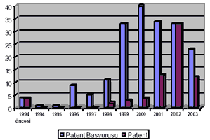

|
 Araþtýrma
ve geliþtirmeye önemli yatýrýmlar yapan Arçelik, geliþtirilen
özgün ürünlerin patentlerle korunmasý için üniversitelerle
iþbirliðine giderek bu konuda seminerler vermeye baþladý.
Yabancý þirketlerden lisans alarak üretim yapmak yerine, kendi
tasarladýðý ürünleri yurtiçi ve yurt dýþý pazarlara satan
Arçelik, patentler hakkýnda ÝTÜ, ODTÜ, Boðaziçi ve Koç Üniversiteleri
ile ortak seminerler planlayarak çalýþmalara baþladý. Araþtýrma
ve geliþtirmeye önemli yatýrýmlar yapan Arçelik, geliþtirilen
özgün ürünlerin patentlerle korunmasý için üniversitelerle
iþbirliðine giderek bu konuda seminerler vermeye baþladý.
Yabancý þirketlerden lisans alarak üretim yapmak yerine, kendi
tasarladýðý ürünleri yurtiçi ve yurt dýþý pazarlara satan
Arçelik, patentler hakkýnda ÝTÜ, ODTÜ, Boðaziçi ve Koç Üniversiteleri
ile ortak seminerler planlayarak çalýþmalara baþladý.
Seminerlerde,
son sýnýf öðrencilerinin gelecekte çalýþabilecekleri Ar-Ge
bölümlerinde patent hakkýnda daha fazla bilgiye sahip olmalarý,
yaptýklarý buluþlarý korumalarý ve rakiplerin patentlerini
ihlal etmemeleri amacýyla bilgiler aktarýlýyor. 2003 - 2004
yýlý eðitim dönemini kapsayan seminerler sonucunda bilgi eksikliðinin
giderilmesiyle Türk sanayisinin ihtiyaçlarýnýn da karþýlanacaðýna
inanýlýyor.
Yaþanmýþ
örnekler anlatýlýyor:
Ekim
ayýnda baþlayan seminerlerde ilk aþamada, her dört üniversitede
de patent konusunda genel bilgilere ve Arçelik'te yaþanmýþ
örneklere yer verildi. Öðrenciler, kendi ürünlerini geliþtiren
firmalarda fikri haklarýn, özellikle buluþlarýn hangi yöntem
ve araçlarla koruma altýna alýnabileceðine dair bilgiler aldýlar.
2004
eðitim döneminde de devam eden seminerlerde, ürün ve hizmet
geliþtirme faaliyeti ile özgün hizmet ve ürün tasarlayan firmalar
için en önemli konu olarak ortaya çýkan ürünlerin ve hizmetlerinin
patenti, endüstriyel tasarým tescili gibi yasal yollarla koruma
altýna almak ve taklitleri engellemek gibi konular iþleniyor.
Ayrýca, öðrencilerin iþ hayatýnda ihtiyaç duyabilecekleri
bilgiler de aktarýlýyor.
Seminerler
Arçelik Üretim ve Teknoloji Grup Direktörü Turgut Soysal,
Araþtýrma ve Teknoloji Geliþtirme Direktörü Þemsettin Eksert
ve Fikri Haklar Yöneticisi Sertaç Köksaldý tarafýndan veriliyor.
Not:
ÝTÜ'de verilen seminer notlarý sitemizde yayýnlanmaya baþlamýþtýr:
Fikri Haklar
Arçelik,
Türkiye'nin patent zengini:
Türkiye'de en fazla patent sahibi olan Arçelik, 6-7 Kasým
2003 tarihleri arasýnda Sanayi ve Ticaret Bakanlýðý Sergi
Salonu'nda, Türk Patent Enstitüsü'nün (TPE) Cumhuriyet'in
80. yýlý için düzenlediði sergiye patentli ürünleriyle katýldý.
Yýllýk
cirosunun %1,5 kadarlýk bir kýsmýný araþtýrma ve geliþtirmeye
yaptýðý yatýrýmlara ayýran ve bu sayede teknoloji alanýnda
önemli geliþmeler kaydeden Arçelik, geniþ ürün yelpazesini
aldýðý patentlerle koruyor.
Yerli
baþvurularýn %10'u Arçelik'in:
1990
yýlýndan itibaren kendi teknolojisini oluþturan ve Ar-Ge yatýrýmlarýna
hýz veren Arçelik, geliþtirdiði teknolojileri korumak ve taklit
edilmelerini önlemek için fikri haklar konusunda bir grup
kurdu. Patent baþvurularý ile ilgili tüm iþlemleri yürüten
Fikri Haklar Grubu, 1996 yýlýndan beri 194 patent baþvurusunda
bulundu. Ayrýca, Türkiye'de son 3 senedeki yerli patent baþvurularýnýn
%10'u da Arçelik tarafýndan gerçekleþtirildi.
Arçelik,
ürünlerdeki komponentler, elektronik kontrol, yýkama, temizleme,
piþirme, soðutma iþlevlerini yerine getiren sistemler ve üretim
yöntemleri gibi konularda patent alýyor. %40'ýndan fazlasý
mevcut ürünlerde bulunan patentlerin, %25'i yakýn gelecekteki
ürünlerde, %35'i ise geliþmekte olan teknolojilerle ilgili
ürünlerde kullanýlmasý planlanýyor...
Daha fazla bilgi için:
TurkCADCAM.net
portalýndan ilgili haber ve raporlar:
|